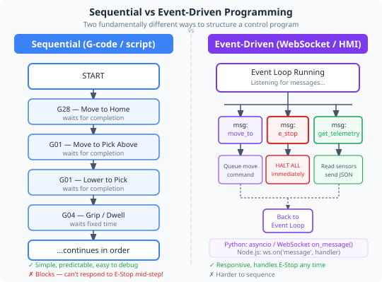
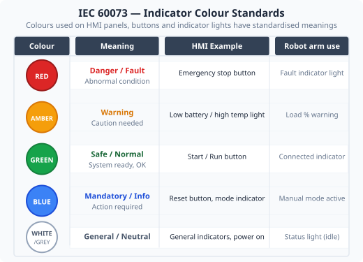

Duration: 3–4 hours · Prerequisites: Modules 1 & 3
A Human-Machine Interface is any system through which a person interacts with and controls a machine. It is the boundary between human intention and machine action.
Good HMI design makes it easy to do the right thing and difficult to do the wrong thing. For a robot arm, the HMI must give the operator:
The application you are using is a custom-built HMI for this robot arm. It provides several different control modes, each suited to a different type of task:
Intuitive slider-based control. Good for manually positioning the arm or exploring the range of motion. Analogous to a traditional teach pendant in industry.
Drag-and-drop block-based programming. Good for beginners — no syntax to learn. Creates repeatable sequences without writing text code.
Text-based numeric program format, widely used in CNC machines. Good for precisely defined path sequences loaded from a file.
Direct numerical control of individual joint angles. Good for precise single-joint movements and for monitoring real-time telemetry.
ABB RAPID-subset text scripting language. Good for students who need conditional logic or want preparation for real industrial robot programming.
MoveJ, MoveAbsJ, MoveJOffs, MoveLXYZ, MoveLOffs, WaitTime, SetDO, Home, GripperOpen, GripperClose, PumpOn, PumpOff. RAPID is more powerful than G-code for programs with conditional logic, and writing it is excellent preparation for real industry programming roles.
In this activity you will use the Pendant Control tab to move each joint and observe the arm respond in both the real world and in the 3D visualisation. Check the workspace is clear before enabling torque.
In the Pendant Control tab, note that movement is in Cartesian space (X, Y, Z in millimetres), not joint-angle space. The XY jog wheel moves the arm's tool tip in the horizontal plane; the Z Up / Z Down buttons move it vertically. Set the step size (in mm) before jogging.
Compare this to the Joint Control tab — there, the step presets are in degrees (1°, 5°, 10°, 45°) and each button moves only one joint. The Pendant Control tab is intended for coarser, position-oriented movement; Joint Control is for fine single-joint tuning.
Ensure the arm is connected (Module 3, Activity 3A). Open the Pendant Control tab. You should see a slider for each joint.
Open the 3D Visualisation tab in a second window or split your screen if possible, so you can watch both simultaneously.
Enable torque and clear the working envelope. Slowly drag the Joint 1 slider from its current position to +20° and back. Observe the base rotation on the real arm and in the 3D view.
Repeat for each joint in turn. Record the range of motion (minimum and maximum angle) for each joint in the worksheet table.
Find the speed control slider (or input) on the Pendant tab. Set speed to 20%. Move Joint 2 to its midpoint and note how the arm moves compared to 100% speed.
Set the arm to a position you find interesting. On the Stored Positions tab, save this as position slot 0 with the label Home.
Move the arm to a different position. Then load position 0 and confirm the arm returns to Home.

Most robot programs execute instructions one at a time, in order. Move to position A, wait, move to position B, wait, repeat. This is called sequential execution. It is predictable and easy to reason about.
The control application itself is event-driven — it does nothing until something happens (a button click, a WebSocket message, a timer firing). Each event triggers a specific handler function. This is how modern graphical applications work.
A variable stores a value that can change. In robot control programs, variables track things like the current joint angle, the target position, the movement speed, and whether torque is enabled.
A loop repeats a block of instructions. Loops are used to:
An if/else conditional lets a program make decisions. For example: if the load reading exceeds a threshold, then stop the motor. This is how safety limits are implemented in software.
Blockly lets you build programs by snapping blocks together — no typing required. In this activity you will create a simple pick-and-place sequence and run it on the arm.
Navigate to the Visual Programming tab. You should see a blank canvas and a palette of blocks on the left.
From the palette, drag a "Move to stored position" block onto the canvas. Set it to position 0 (your Home position from Activity 4A).
Add a "Wait" block below it and set the delay to 1000 ms (1 second).
Save a second position on the arm (position slot 1, label it Pick). Add a "Move to stored position" block set to 1.
Add another Wait block (1000 ms), then a "Move to stored position" block set back to 0 (Home).
Your sequence is: Home → wait → Pick → wait → Home. Before running, ensure the workspace is clear, then click Run Program. Watch the arm execute the sequence.
Modify the program to repeat the Home → Pick cycle 3 times using a Loop block. Run it again and verify it repeats correctly.
Use the Convert to G-Code button to export your Blockly sequence as a G-code file. Open the G-Code Control tab and paste or load the exported code — you should be able to run the same sequence from the text file. This shows that all three text-based modes (G-Code, RAPID, and Blockly's export) describe the same motion.
Use the Convert to RAPID button to export the same sequence as a RAPID script. Compare the G-code and RAPID versions — note the differences in syntax while recognising that both describe the same physical movements.

A well-designed HMI reduces errors and makes operators more effective. Key principles include:
Controls that do similar things should look and behave the same way. If "Start" is a green button in one screen, it should be green in every screen. Users build muscle memory — inconsistency breaks it.
Every action should produce a visible response. Clicking "Connect" without seeing any status change is confusing — did it work? The application shows a colour-coded status indicator and a latency reading for this reason.
It is better to stop a dangerous action from being possible than to deal with the consequences after it happens. The torque enable/disable flow is an example: the application requires the operator to explicitly enable torque rather than having it enabled by default.
Operators should not need to remember information from one screen to use another. Displaying the current joint angles on every tab (not just Joint Control) means the operator always knows the arm's state without switching tabs.
| Joint | Minimum angle (°) | Maximum angle (°) | Total range (°) |
|---|---|---|---|
You have just done what robotics engineers do every day: used a software interface to teach a robot a sequence of movements, then had it repeat that sequence automatically. The difference between your Blockly program and an industrial robot's program is mainly scale and complexity, not concept.
The pendant control method you used is functionally identical to how industrial robots are programmed by operators on factory floors worldwide — they jog each joint to a position, save it, and build up a sequence. The Blockly visual programming environment bridges the gap between that hands-on teaching approach and writing structured code.
HMI design is a discipline in its own right. Poor interfaces have caused industrial accidents — the Three Mile Island nuclear incident is partly attributed to confusing control room layout and indicator design. The principles you reviewed (feedback, consistency, error prevention) are not aesthetic preferences; they have measurable effects on operator performance and error rates.
As you progress to later modules — particularly G-code programming (Module 9) and system integration (Module 11) — you will see how the software layers build on top of what you have used today.
1. Which HMI design principle is violated when an application shows a red button labelled "Start"?
2. In the Blockly program you created, what type of programming structure did you use to repeat the Home → Pick cycle?
3. The robot arm application is described as "event-driven". What does this mean?